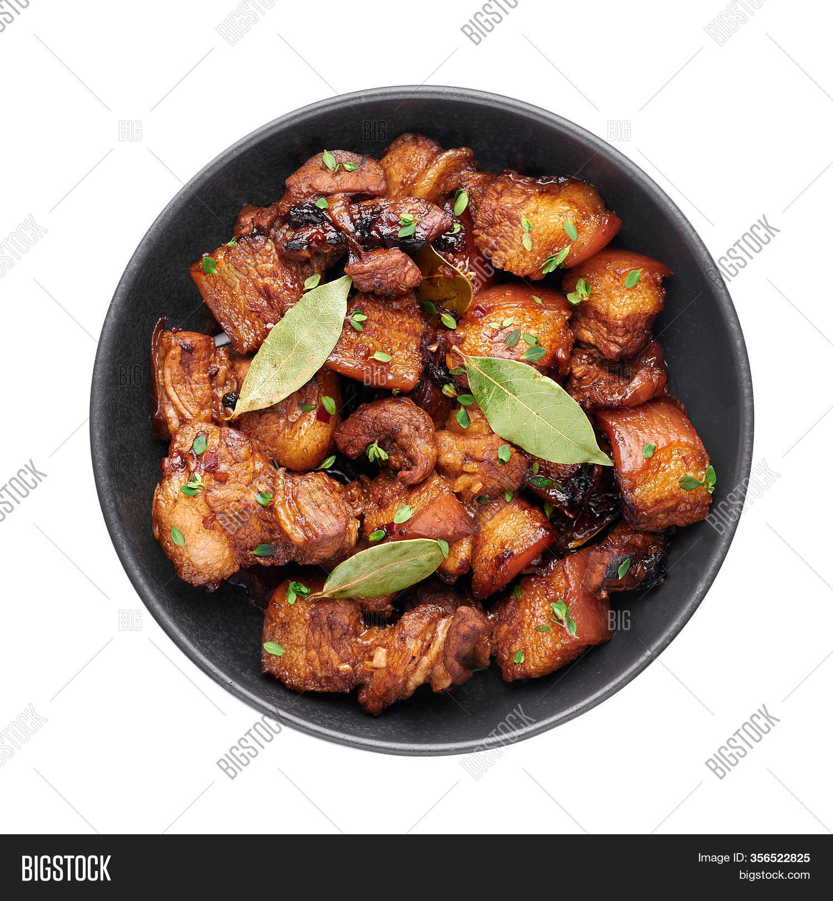
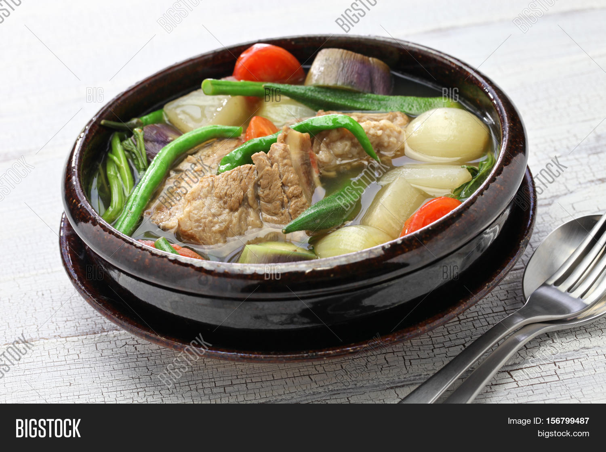
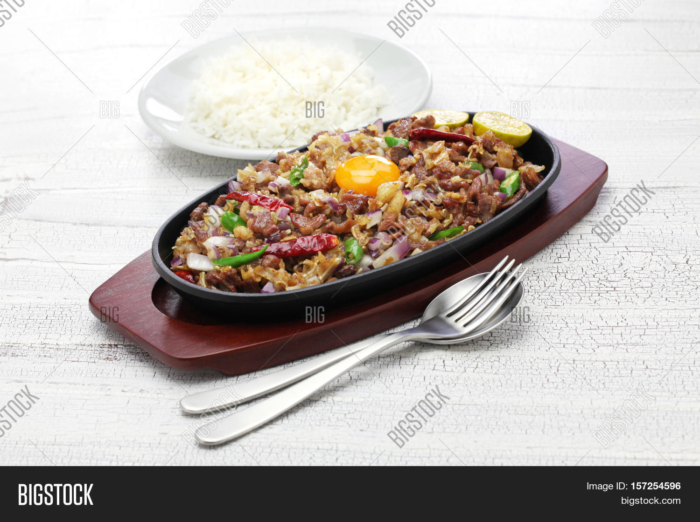

 Pork Adobo 3-4 servings A Filipino pork dish where pork slices are cooked with soy sauce, vinegar, and garlic. The pork used are marinated to make a stronger flavor, the umami, impact.
 Pork Sinigang 3-4 servings A sour soup dish from the Philippines which includes pork and vegetables. The soup is clear but full of flavor and sourness that came from the tamarind fruit
 Pork Sisig 2-3 servings The dish consists of chopped pork mainly from pig's face cooked until crispy. It is served with different condiments that compliments the texture and taste. Good with beer.